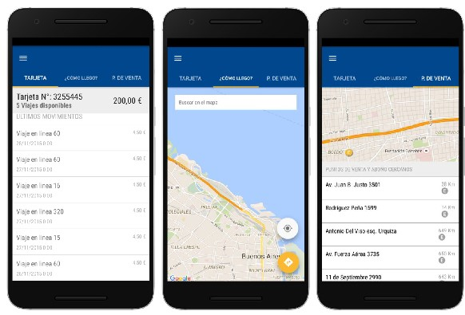
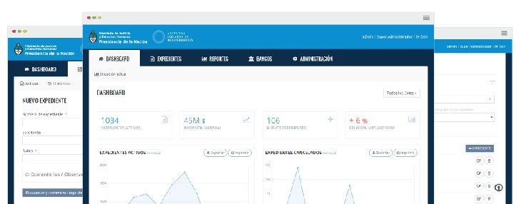
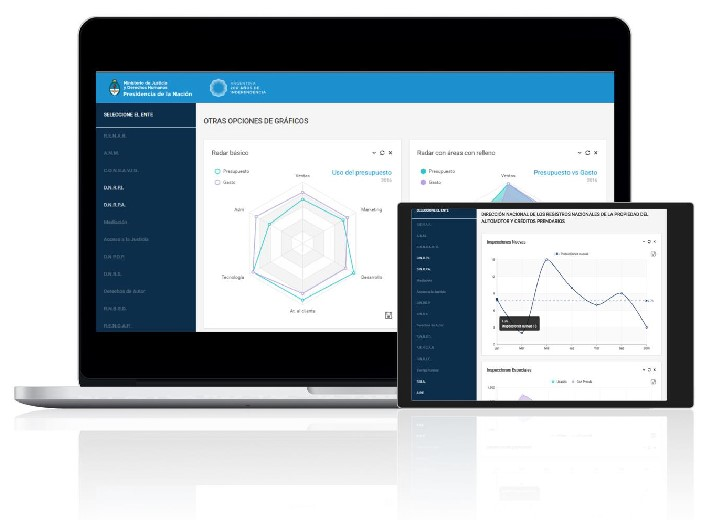
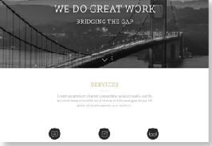

[Android SDK,Rest API]
Diseño y desarrollo de aplicación Android para importante red de transportes. Las principales funciones del sistema incluyeron:

Asistente que proporciona instrucciones de viaje.
Información de las paradas de las líneas de colectivo.
Indica los recorridos.
Notifica a los usuarios las calles o zonas que se verán afectadas por las interrupciones o complicaciones.
Indica los movimientos del pasajero y detalla el saldo restante.
Información referente a los puntos de recarga de la tarjeta.
Infomación de las tarifas de viaje.
[PHP, MySQL, HTML5, Bootstrap, CakePHP]

Diseño y desarrollo de aplicación web de gestión de expedientes
y licitaciones para importante ministerio del gobierno nacional.
Algunas de las características que el sistema posee son:
Carga y solicitud de trámites.
Consulta, administración y otorgamiento de los mismos.
Pago y Ejecución de expedientes.
Reportes de gestión por Ente o Generales.
Dashboard o tablero que permite conocer indicadores en tiempo real.
Administración de usuarios y validación con Active Directory.
Desarrollo de tres niveles de gestión de usuario
(Súper Adm Usuario).
[HTML5, Android SDK]
Diseño y desarrollo de tablero de control que brinda información estadística de operaciones de distintos Organismos para la ayuda en la toma de decisiones de los mismos. El proyecto fue realizado para las plataformas web y tabletas Android

Desarrollo de sitio web para Institución que reúne distintas áreas como Wellness, Alto Rendimiento y Actividades Recreativas

Desarrollo de sitio web para emprendimiento de traducciones
Desarrollo de sitio web y creación de Identidad y diseño corporativo de Gastro Sur, una organización que comercializa artículos gastronómicos